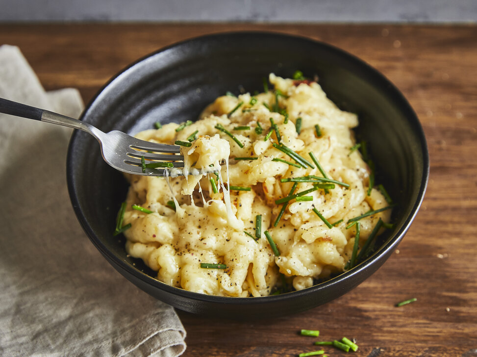

Käsespätzle
Rezept für deftige Käsespätzle
Tipp: Lecker schmecken Röstzwiebeln zu Käsespätzle. Die Röstzwiebeln dazu einige Minuten im Backofen erwärmen und kurz vor dem Servieren darüber streuen.
Zutaten für 2 Personen
- 2 mittelgroße Zwibeln
- 2 EL Sonnenblumenöl
- 40 g Butter
- 500 g frische-Spätzle (Kühlregal)
- 200 g geriebener Bergkäse (oder Emmentaler)
- 2 EL Sauerrahm
- frische Kräuter wie Petersilie oder Schnittlauch
Gewürze
- Salz
- Pfeffer
- geriebene Muskatnuss
Zubereitung
- Die Zwiebeln halbieren, schälen und in feine Würfel schneiden. Das Sonnenblumenöl zusammen mit der Butter in einer Pfanne erhitzen. Sobald die Butter geschmolzen ist, die Zwiebelwürfel hinzugeben und bei mittlerer Hitze etwa 5 Minuten glasig schwitzen bis sie beginnen, braun zu werden.
- Nun die Spätzle in die Pfanne legen, den geriebenen Käse darüber geben und durch vorsichtiges Rühren mit einem Kochlöffel den Käse untermengen, so dass er schmilzt. Sobald der Käse geschmolzen ist, den Sauerrahm unterrühren und alles mit Salz, Pfeffer und geriebener Muskatnuss abschmecken.
- Die Pfanne mit einem Deckel abdecken und bei schwacher Hitze etwa 5 Minuten ziehen lassen. Kräuter waschen, abtropfen lassen, eventuell vom Stengel zupfen und hacken. Am Schluss Käsespätzle mit gehackten Kräutern bestreuen. Guten Appetit!
Back to the Recipies